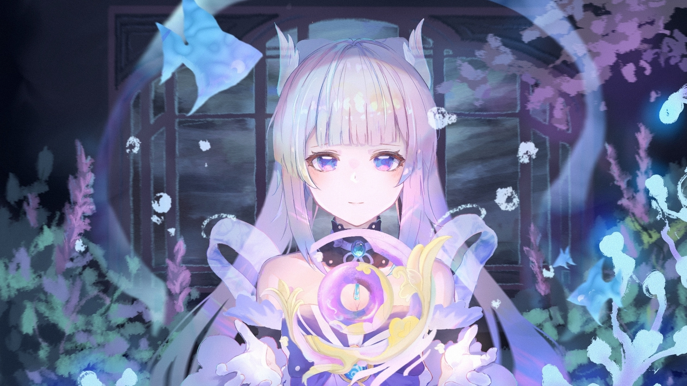

de Kokomi
avant la sortie du jeu


Kokomi est la prêtresse divine et l'autorité suprême en poste sur l'Île de Watatsumi. Elle est une excellente stratège expérimentée dans l'art de guerre qui possède un superbe sens des affaires militaires. Elle est également douée pour la gestion des affaires internes, la diplomatie et dans bien d'autres domaines. Cependant, cette mystérieuse dirigeante possède une face cachée
Rareté : ★★★★★
Élément : Hydro (Hydro element genshin impact 2)
Arme : Catalyseur
Seiyū : Suzuko Mimori
Anniversaire : 22 février
Date d’arrivée bannière Kokomi : Mardi 21 septembre 2021
Sangonomiya Kokomi est un personnage Hydro dans Genshin Impact. La jeune prêtresse divine de l'Île de Watatsumi et descendante du Clan Sangonomiya, Kokomi est en charge de la plupart des affaires de Watatsumi, assumant seule de lourdes responsabilités dans l'espoir de donner aux habitants de l'Île de Watatsumi les espoirs et le bonheur qu'ils désirent.